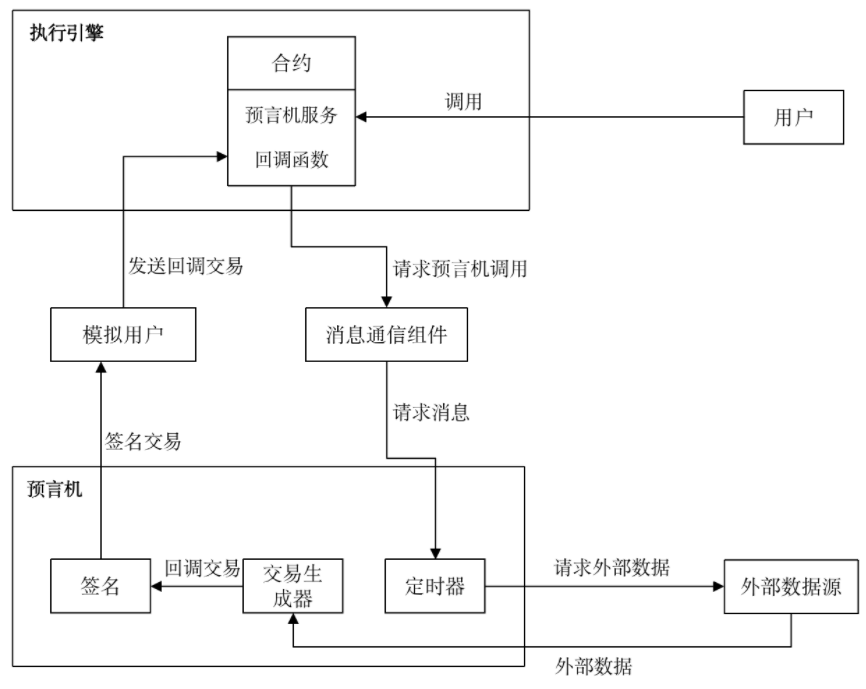

预言机¶
功能概述¶
为提供给区块链智能合约一个安全可靠的获取外部数据源的功能，我们引入Oracle预言机来帮助获取可信的外部数据，并将获取到的外部数据提供给合约进行使用。通过HVM智能合约发起获取外部数据的请求，由Oracle预言机将外部数据获取后，返回给HVM智能合约使用。本节将介绍如何通过HVM合约使用Oracle服务。
一次完整的Oracle执行流程如下：
用户调用HVM合约请求Oracle服务；
HVM执行合约以及Oracle服务，并返回uuid（uuid表示本次Oracle请求的唯一ID，绑定回调交易哈希）；
Oracle服务执行成功，平台发起回调交易；
在回调交易中执行用户编写的回调逻辑。
在这个流程当中，与用户发生交互的步骤包括以下两点：
调用HVM合约请求Oracle服务
编写回调函数逻辑
使用说明¶
调用合约请求Oracle服务¶
本小节将介绍如何编写HVM合约来调用Oracle服务。需要在maven或gradle导入 1.1.0及以上 版本的HVM-SDK。
Oracle服务接口¶
在HVM-SDK里的BaseContract中，我们增加了新接口以提供用户通过调用合约的方式使用Oracle服务，接口如下:
public String callOracle(OracleRequest request) {}
其中OracleRequest的结构如下:
public class OracleRequest {
String url;
RequestMethod method = RequestMethod.GET;
Map<String, String> header;
String body;
String bizId;
String callBackAddress;
String callBackMethod;
}
其中各参数的意义如下：
url：请求资源的web网址，必须是支持https的服务站点;
method：请求方法。RequestMethod是一个默认方法，包括GET、POST，默认为GET方法，其结构如下:
public enum RequestMethod { GET, POST; }
header：请求资源时想要带上的自定义http请求头;
body：请求资源时想要带上的请求体;
bizID：用户针对业务需求自定义的唯一标识ID;
callBackAddress：回调函数所在的合约地址;
callBackMethod：回调函数名，回调函数声明格式为: <return_type> <method_name>(OracleResponse response);
合约中调用Oracle服务¶
我们可以在合约中调用 callOracle 接口来使用Oracle服务，下面的例子是向 https://www.hyperchain.cn 请求数据，并将 callbackOracle 作为我们的回调函数，回调函数将在下一小节进行介绍。在调用Oracle服务接口后，返回uuid，uuid绑定回调交易的交易哈希:
public class OracleContract extends BaseContract implements IOracleContract {
……
/**
* 调用Oracle服务
*/
@Override
public String oracleRequest() {
// 构造Oracle服务需要的参数
HashMap<String, String> header = new HashMap<>();
header.put("Host", "https://www.hyperchain.cn");
header.put("Accept", "text/html");
OracleRequest req = new OracleRequest("https://www.hyperchain.cn", header, "", "demo");
req.setCallBackMethod("callbackOracle");
// 调用Oracle服务接口，得到uuid，uuid绑定回调交易的交易哈希
String uuid = callOracle(req);
return uuid;
}
……
}
回调函数¶
在前面的章节中，我们在调用Oracle请求中传入了回调函数的名称，平台在成功执行预言机请求后 自动发起回调交易，执行用户指定的回调函数 。回调函数由用户自己实现，本节我们将介绍如何编写回调函数。
回调函数介绍¶
回调函数的 参数有且仅有一个OracleResponse，而且在回调函数中不能再次发起Oracle请求调用，回调函数的格式如下:
<return_type> <method_name>(OracleResponse response);
其中OracleResponse的结构如下:
public class OracleResponse {
private int code;
private String message;
private Map<String, String> repHeader;
private String repBody;
byte[] uuid;
String bizId;
byte[] callerContract;
}
各参数的意义如下：
code：预言机服务制定的状态码标准，具体的返回结果状态码如下表所示：
Oracle回调状态码 |
含义 |
|---|---|
200 |
请求成功 |
404 |
请求资源不存在 |
999 |
请求超时 |
message：状态码表示的信息
repHeader：响应请求头
repBody：响应请求体
uuid：由平台计算出的每次Oracle请求的唯一标识
bizId：用户针对业务需求自定义的唯一标识ID
callerContract：发起Oracle服务请求的合约地址
编写回调函数逻辑¶
在介绍完回调函数逻辑后，我们给出一个简单的回调函数示例，通过回调函数打印一些响应信息。
public class OracleContract extends BaseContract implements IOracleContract {
……
private Logger logger = Logger.getLogger(OracleContract.class);
/**
* 用户编写的回调函数示例，
* 打印响应的部分信息
*/
public void callbackOracle(OracleResponse response) {
logger.notice("this is callbackOracle");
logger.notice("bizId is:" + response.getBizId());
logger.notice("uuid is:" + response.getUuid());
logger.notice("message is:" + response.getMessage());
logger.notice("repBody is:" + response.getRepBody());
}
……
}
获取回调交易哈希¶
前面提到过，Oracle服务执行成功，平台发起回调交易，在回调交易中执行用户编写的回调逻辑。如果用户想要获取这笔回调交易的交易哈希，可以在合约中执行`getCallbackTxHash`的逻辑，该接口由BaseContract提供，根据uuid返回回调交易的哈希。
public class OracleContract extends BaseContract implements IOracleContract {
……
/**
* 根据uuid获取回调交易的哈希
*/
@Override
public String getTxHashByUuid(String uuid) {
return getCallbackTxHash(uuid);
}
……
}
操作流程图¶

使用示例¶
本小节我们将基于前面给出的OracleContract合约，给出LiteSDK 的使用示例，示例包含两个部分：
OracleContract合约部署，通过合约调用Oracle服务；
调用合约获取回调交易哈希。
调用Oracle服务¶
我们通过invokeBean的方式进行合约调用，首先给出InvokeBean的代码。
InvokeOracle代码
public class InvokeOracle implements BaseInvoke<String, IOracleContract> {
@Override
public String invoke(IOracleContract iOracleContract) {
return iOracleContract.oracleRequest();
}
}
InvokeCallback代码
public class InvokeCallback implements BaseInvoke<String, IOracleContract> {
private String uuid;
public InvokeCallback() {
}
public InvokeCallback(String uuid) {
this.uuid = uuid;
}
@Override
public String invoke(IOracleContract iOracleContract) {
return iOracleContract.getTxHashByUuid(uuid);
}
}
测试代码
public class TestOracle {
private static String jarPath = "oracleContractDemo-1.0-SNAPSHOT.jar";
private static String defaultURL = "localhost:8081";
@Test
public void testOracle() throws IOException, RequestException,InterruptedException {
//1.部署合约
InputStream is = FileUtil.readFileAsStream(jarPath);
DefaultHttpProvider defaultHttpProvider = new DefaultHttpProvider.Builder().setUrl(defaultURL).build();
ProviderManager providerManager = ProviderManager.createManager(defaultHttpProvider);
ContractService contractService = ServiceManager.getContractService(providerManager);
AccountService accountService = ServiceManager.getAccountService(providerManager);
Account account = accountService.genAccount(Algo.ECRAW);
Transaction transaction = new Transaction.HVMBuilder(account.getAddress()).deploy(is).txVersion(TxVersion.TxVersion23).build();
transaction.sign(account);
ReceiptResponse receiptResponse = contractService.deploy(transaction).send().polling();
String contractAddress = receiptResponse.getContractAddress();
System.out.println("contract address: " + contractAddress);
//2.调用合约，调用预言机服务的方式和正常交易流程一致
Transaction transaction1 = new Transaction.HVMBuilder(account.getAddress()).invoke(contractAddress, new InvokeOracle()).txVersion(TxVersion.TxVersion23).build(); transaction1.sign(account);
ReceiptResponse receiptResponse1 = contractService.invoke(transaction1).send().polling();
String uuid = Decoder.decodeHVM(receiptResponse1.getRet(), String.class);
System.out.println("[uuid]:" + uuid);
//3.等待一定时间，待平台执行回调交易后，通过uuid获取回调交易哈希
Thread.sleep(2000);
Transaction transaction2 = new Transaction.HVMBuilder(account.getAddress()).invoke(contractAddress, new InvokeCallback(uuid)).txVersion(TxVersion.TxVersion23).build();
transaction2.sign(account);
receiptResponse2 = contractService.invoke(transaction2).send().polling();
System.out.println("callback tx hash: " + Decoder.decodeHVM(receiptResponse2.getRet(), String.class));
}
}
完整示例代码可以获取源码包oracleContractDemo直接运行体验。